第 16 章：设计附近服务（Proximity Service）
原章节：Proximity Service · 原项目路径
16. Proximity Service/
本章导读
打开地图 App，点"附近的餐厅"，一秒钟内返回结果。这个功能简单得让人觉得理所当然。
但这里藏着一个数据库根本无法直接回答的问题：
「给我找出这个点周围 500 米内的所有商家」——这条查询，用 B+ 树索引怎么写？
答案是：写不出来。B+ 树是一维索引，它只能高效地回答"某个字段在某个范围内"的查询。而"周围 500 米"是二维范围查询——纬度和经度必须同时满足条件。对纬度建索引，只能过滤掉南北方向的候选；对经度建索引，只能过滤东西方向。两个索引都用上，数据库也只能各扫一遍再求交集，数据量一大就彻底跑不动。
所以这一章的核心问题只有一个：怎么把二维的空间位置，压缩成一维的、可以用普通索引快速查找的键。
学完这一章，你应该能回答：GeoHash 到底是什么、它有什么著名的坑、为什么工业界最终选了 Redis GEO 或 PostGIS、以及处理用户位置数据时要遵守哪些合规要求。
你将学到
- 为什么朴素的范围查询和普通索引都无法解决二维搜索问题
- GeoHash 的编码原理，以及不同长度对应多大的实际范围（本章会完整验算）
- GeoHash 最著名的坑——边界问题，以及为什么"查询相邻 8 个格子"是必需的
- 四叉树（Quadtree） 如何按数据密度自适应划分空间，以及它的运维代价
- Google S2 与 Hilbert 曲线，以及它为什么适合地理围栏（Geofencing）
- 工业界的两大实现：Redis GEO 与 PostGIS，以及它们底层用的索引结构
- 数据库分片与缓存键的选择（为什么缓存键应该是 geohash 而不是坐标）
- 位置数据的隐私合规要求与工程对策
1. 需求与范围
附近服务（Proximity Service） 用来查找附近的地点：餐厅、酒店、加油站、商户等。Google Maps、Yelp 这类应用都提供这个功能。
功能需求
- 按位置搜索商家：给定用户的经纬度和搜索半径，返回附近的商家
- 商家维护：商家所有者可以新增、更新、删除商家信息（不要求实时生效）
- 查看详情：按需返回商家的详细信息
注意第 2 条的"不要求实时生效"。这一句看起来是限制，实际上是巨大的简化——它允许我们把商家数据做成每天批量更新，从而彻底绕开"写操作如何影响空间索引"这个难题。在系统设计里，识别出"哪些需求不要求实时"，往往能省掉一半的复杂度。
非功能需求
| 需求 | 含义 |
|---|---|
| 低延迟 | 用户要立刻拿到结果 |
| 数据隐私 | 遵守 GDPR 和 CCPA 等法规 |
| 高可用 | 能扛住热门地区的流量峰值 |
粗略估算
日活用户（DAU） = 1 亿
商家总数 = 2 亿
每用户每天搜索次数 = 5 次
搜索 QPS = 1 亿 × 5 / 86,400 秒
= 5 亿 / 86,400
≈ 5,787 QPS
勘误提示：原笔记写的是「≈ 5,000 QPS」。按它自己给的数字算出来应该是 约 5,800 QPS。详见文末【勘误与补充】。
还要注意：QPS 是平均值，不是峰值。 位置服务的流量有极强的时段性和地域性——周五晚上 7 点，市中心的搜索量可能是凌晨的几十倍。所以容量规划要按峰值 QPS = 平均 QPS × 峰值系数来算，通常取 2～3 倍，也就是约 1.2 万 ～ 1.7 万 QPS。
2. API 设计
搜索附近商家
GET /v1/search/nearby
请求参数：
| 参数 | 含义 |
|---|---|
latitude |
用户所在纬度 |
longitude |
用户所在经度 |
radius |
搜索半径（默认 5000 米） |
商家管理 API
| 端点 | 说明 |
|---|---|
GET /v1/businesses/{id} |
获取商家详情 |
POST /v1/businesses |
新增商家 |
PUT /v1/businesses/{id} |
更新商家信息 |
DELETE /v1/businesses/{id} |
删除商家 |
3. 数据模型与高层架构
数据模型
原笔记的判断是：因为「搜索附近商家」和「查看商家详情」这两个功能读取量极大，所以关系型数据库（如 MySQL）是合适的选择。
这个判断是对的，而且理由值得展开：
- 这是一个读多写极少的系统。商家信息由店主维护，更新频率低（每天批量一次）；而搜索和查看详情是高频操作。
- 商家信息是高度结构化的（名称、地址、电话、营业时间、分类），并且需要事务保证（比如"新增商家的同时写入索引"）。
- 数据量（2 亿条）对现代关系型数据库完全在可控范围内。
数据表
两张核心表：
- 商家表（Business Table）：存商家的详细信息
- 空间索引表（Geospatial Index Table）：存"格子 → 商家 ID"的映射
高层架构
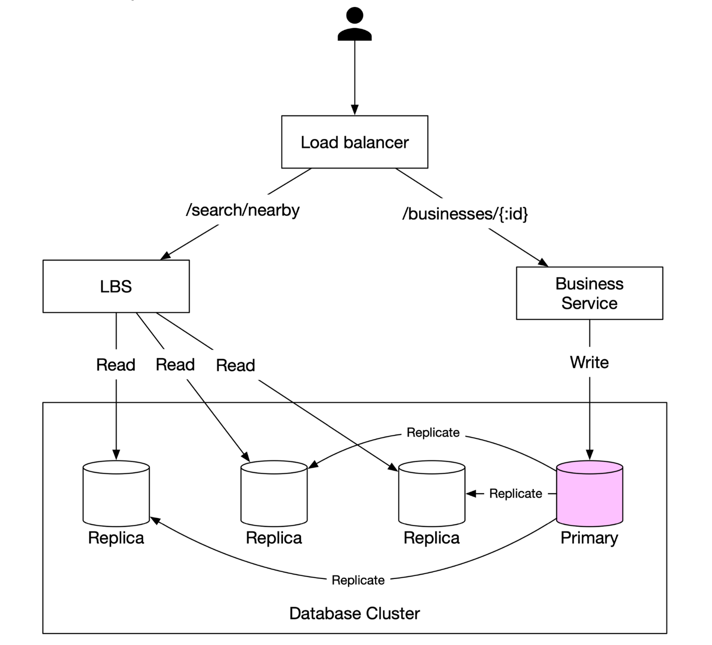
系统分成两部分：
① 位置服务（LBS，Location-Based Service）
- 处理基于位置的搜索查询
- 只读、无写请求
- QPS 很高（尤其是密集区域的峰值时段），且服务本身无状态
② 商家服务（Business Service）
- 处理两类请求：商家所有者增删改商家；顾客查看商家详情
③ 负载均衡器：把流量路由到 LBS 和商家服务。
④ 数据库集群
- 用 Primary-Replica（主副本） 架构应对读多的负载
- LBS 读到的数据可能和主库刚写入的数据有短暂不一致
- 但这个不一致不是问题，因为商家信息本来就不是实时更新的
"这个不一致不是问题"这句话是本章最优雅的一个设计判断。 它把一条"看起来是缺陷"的特性，通过业务约束（商家信息不要求实时）转化成了"可以接受"。
在面试中主动做这种判断，比堆砌技术方案更有说服力。 它说明你不是在"套架构"，而是在"根据约束做取舍"。
4. 朴素方案：二维范围查询为什么不行
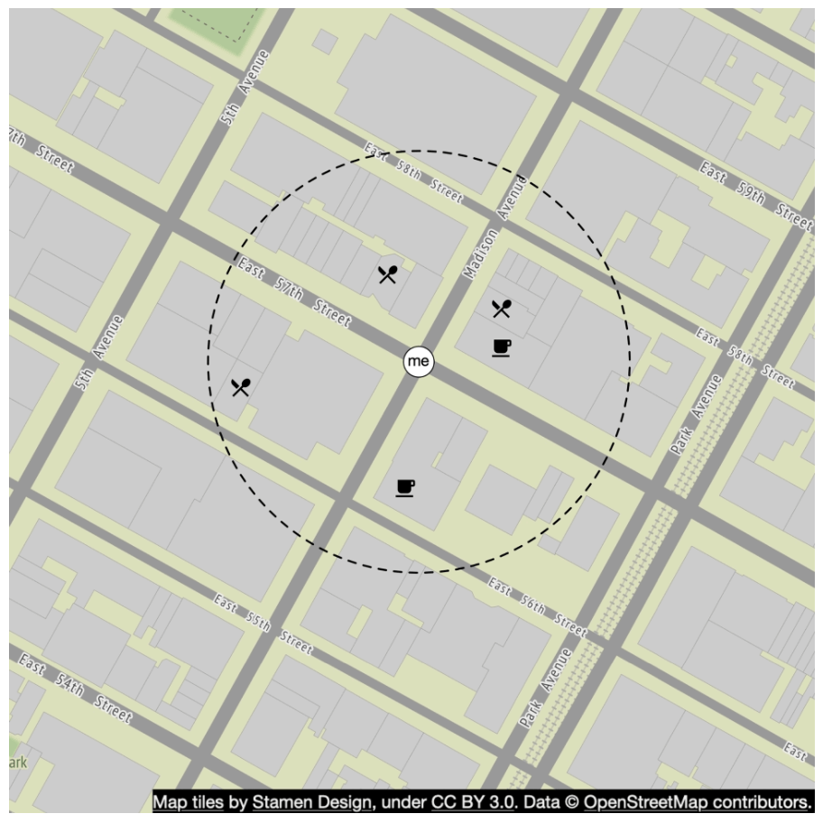
最直觉的做法是：以用户位置为圆心、给定半径画一个圆，找出圆内所有商家。
原笔记给的 SQL
SELECT business_id, latitude, longitude
FROM business
WHERE (latitude BETWEEN :lat - radius AND :lat + radius)
AND (longitude BETWEEN :long - radius AND :long + radius);
这段 SQL 有一个严重的单位错误。
radius的单位是米（默认 5000 米）latitude和longitude的单位是度
你不能用"度"减去"米"。 :lat - radius 在语义上是错的——把 5000 米当成 5000 度来算，结果会是"从北极到南极"的整个范围。详见文末【勘误与补充】。
正确的写法需要把距离换算成度数：
-- 1 度纬度 ≈ 111,320 米（全球近似恒定）
-- 1 度经度 ≈ 111,320 × cos(纬度) 米（随纬度收缩）
SELECT business_id, latitude, longitude
FROM business
WHERE latitude
BETWEEN :lat - (:radius / 111320.0)
AND :lat + (:radius / 111320.0)
AND longitude
BETWEEN :long - (:radius / (111320.0 * COS(RADIANS(:lat))))
AND :long + (:radius / (111320.0 * COS(RADIANS(:lat))));
这里还有第二个问题：方框 ≠ 圆
上面这段 SQL 查出来的是一个矩形（包围盒），不是圆。矩形的四个角上的商家，实际距离圆心超过半径，属于误报（False Positive）。
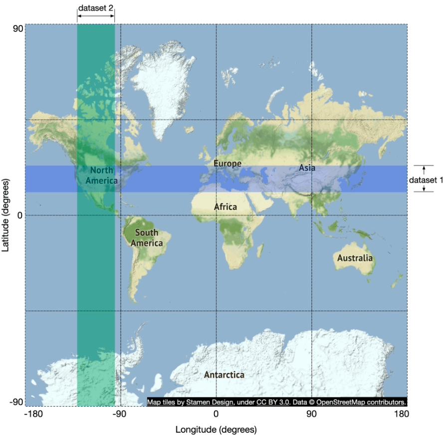
所以完整的流程是"两阶段"：
- 粗筛：用包围盒 + 索引快速捞出候选集（可能包含误报）
- 精筛：对候选集逐个计算真实球面距离（Haversine 公式），过滤掉圆外的点，再按距离排序
这种"先用廉价的空间索引粗筛、再用精确计算精筛"的两阶段模式，是所有空间数据库的通用做法。 PostGIS 的
ST_DWithin、Redis 的GEOSEARCH、Elasticsearch 的 geo 查询，内部都是这么做的。
为什么给经纬度建索引也没用
原笔记写的是：「在经度和纬度列上建索引，虽然会稍微好一点，但仍然非常慢。」
这个结论对，但理由要讲清楚，否则初学者会以为"两个索引加起来就行"：
- B+ 树索引是严格一维的。 对
latitude建索引后，数据库能快速定位到"纬度在 [37.77, 37.78] 之间"的那一段记录，但这些记录在经度上是完全乱序的。 - 同理，
longitude索引在纬度上是乱序的。 - 两个索引的交集只能靠"分别扫描两段再求交"，而两段各自都可能包含几百万条记录。索引帮你缩小了范围，但没有解决"二维同时约束"这个根本问题。
- 建复合索引
(latitude, longitude)也不行：复合索引只在"第一个字段是等值查询"时才能高效利用后续字段。这里是范围查询，第二个字段依然用不上。
结论：一维索引无法解决二维范围查询。必须先把二维数据映射成一维键，或者改用专门的空间索引结构。
5. 把二维压成一维：空间索引的两大流派
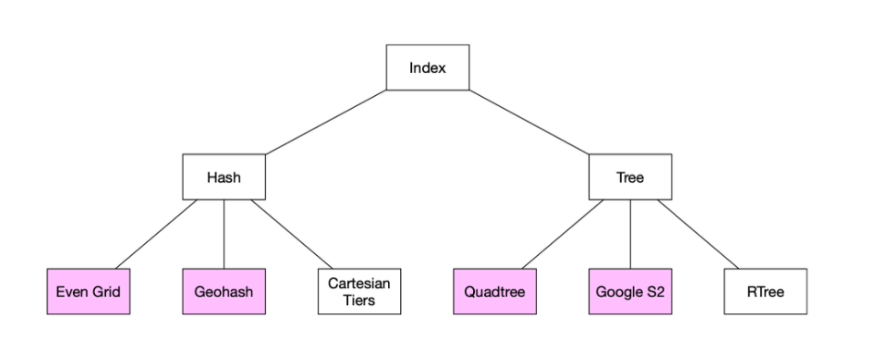
原笔记的分类是对的，这里把它的含义讲清楚：
| 流派 | 代表 | 核心思想 |
|---|---|---|
| 哈希类（Hash） | 均匀网格（Even Grid）、GeoHash | 把空间切成固定形状的格子，格子编号就是一维键。查询变成"先算格子编号，再按键查表" |
| 树类（Tree） | 四叉树（Quadtree）、Google S2、R 树（R-Tree） | 用树结构递归划分空间，划分粒度随数据密度自适应 |
两派的核心差异只有一个：格子大小是固定的还是自适应的。
- 固定格子：实现极简单（算编号 → 查索引），但无法适应数据密度——市中心 1 平方公里有 1000 家店，郊区 100 平方公里只有 1 家。用同一个格子大小，要么市中心格子塞爆，要么郊区格子空得浪费。
- 自适应格子：树结构会根据数据量决定"这个区域要不要继续细分"，密度高的地方格子小、密度低的地方格子大。代价是索引结构复杂，更新代价高。
记住这个权衡，本章后面所有方案的取舍都是它的展开。
6. 方案一：均匀网格（Even Grid）

做法：把世界切成固定大小的方格，每个格子有编号，格子编号 → 商家 ID 列表。
问题：商家分布极不均匀。
- 曼哈顿的一个格子可能有几千家餐厅；
- 撒哈拉沙漠的一个格子可能一家都没有。
结果：市中心格子对应的商家列表极长，查询变成一次大列表遍历；而绝大多数格子是空的，浪费索引空间。
这就是"固定格子"流派的根本局限。 后面两种方案，本质上都是在用不同方式缓解这个问题。
7. 方案二：GeoHash
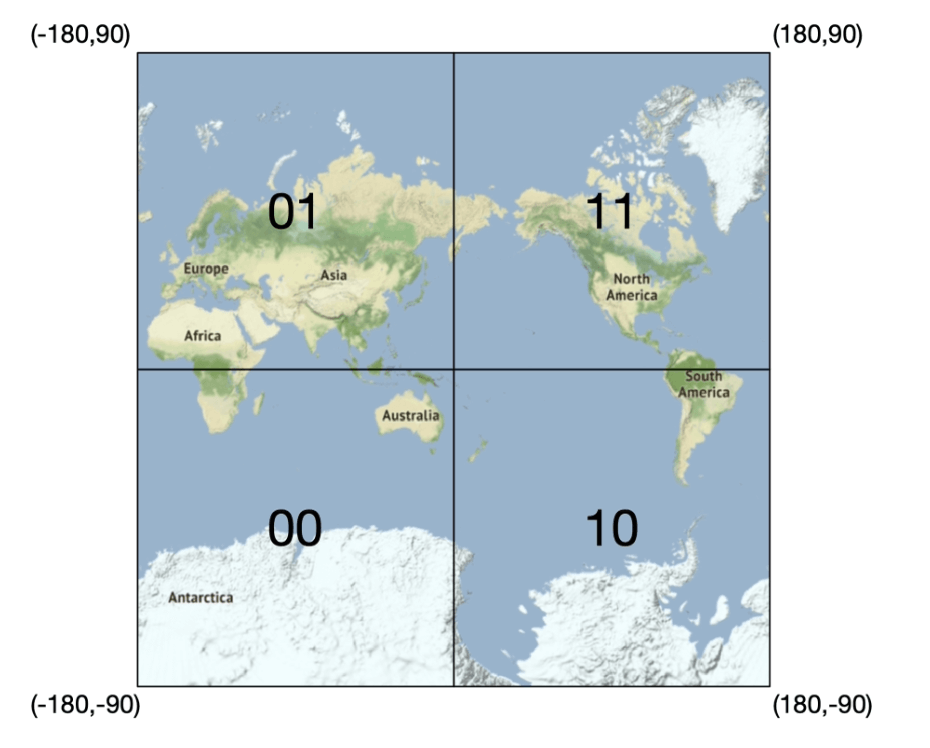
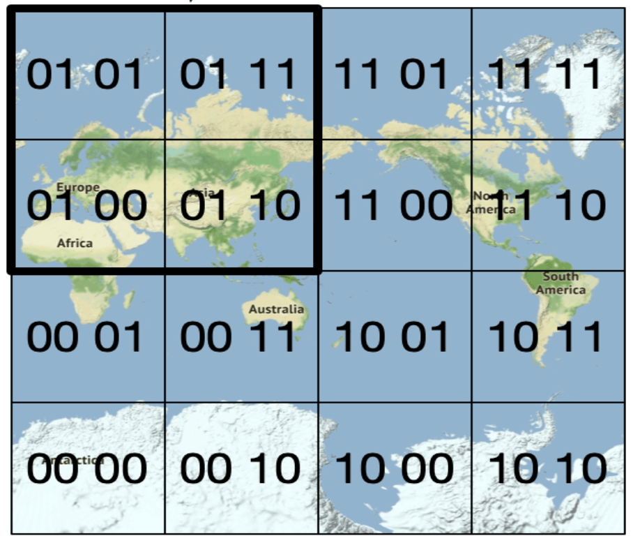
编码原理
原笔记的描述是对的，这里讲得更细一点：
- 第一次划分：沿**本初子午线（经度 0°）和赤道（纬度 0°）**把地球分成四个象限。
- 每层再四分：每个格子再分成四个更小的格子，如此递归。
- 交错编码：每个格子的编号由经度位和纬度位交替组成——第 1 位是经度，第 2 位是纬度，第 3 位是经度……依此类推。
为什么经度位和纬度位要交替？ 因为这样能让"相邻的格子"拥有相邻的编号。如果先把所有经度位排完再排纬度位，那么南北相邻的两个格子编号会相差极大，无法利用"编号范围"做邻域查询。交错（也叫 Morton 编码 / Z-order 曲线）就是为了保持空间局部性。
最后，把这一串二进制位每 5 位一组，用 base32 编码成字符。base32 的字母表是：
0123456789bcdefghjkmnpqrstuvwxyz
注意它去掉了 a、i、l、o 四个字母——因为它们和数字 0、1 太容易混淆。所以一个 geohash 字符串里永远不会出现这四个字母。
GeoHash 共有 12 个精度层级（12 个字符）。
精度验算：不同长度对应多大的范围
这是本章最需要"自己算一遍"的地方。先把公式写出来：
长度为 n 的 geohash 有 5n 个二进制位
其中经度占 ⌈5n/2⌉ 位，纬度占 ⌊5n/2⌋ 位（第 1 位是经度）
经度格宽 = 360° / 2^⌈5n/2⌉
纬度格高 = 180° / 2^⌊5n/2⌋
换算：1° 纬度 ≈ 111.32 km（全球近似恒定）
1° 经度 ≈ 111.32 × cos(纬度) km（随纬度收缩）
按这个公式算出来（以赤道附近为例，经度按最大宽度计）：
| 长度 | 总 bit | 经度 bit | 纬度 bit | 经度格宽 | 纬度格高 | 实际范围 |
|---|---|---|---|---|---|---|
| 1 | 5 | 3 | 2 | 45° | 45° | 约 5000 km × 5000 km |
| 2 | 10 | 5 | 5 | 11.25° | 5.625° | 约 1250 km × 625 km |
| 3 | 15 | 8 | 7 | 1.40625° | 1.40625° | 约 156 km × 156 km |
| 4 | 20 | 10 | 10 | 0.3515625° | 0.17578125° | 约 39.1 km × 19.6 km |
| 5 | 25 | 13 | 12 | 0.043945° | 0.043945° | 约 4.9 km × 4.9 km |
| 6 | 30 | 15 | 15 | 0.010986° | 0.005493° | 约 1.22 km × 0.61 km |
| 7 | 35 | 18 | 17 | 0.0013733° | 0.0013733° | 约 153 m × 153 m |
| 8 | 40 | 20 | 20 | 0.00034332° | 0.00017166° | 约 38.2 m × 19.1 m |
| 9 | 45 | 23 | 22 | 4.2915e-5° | 4.2915e-5° | 约 4.8 m × 4.8 m |
| 10 | 50 | 25 | 25 | 1.0729e-5° | 5.3644e-6° | 约 1.19 m × 0.60 m |
| 11 | 55 | 28 | 27 | 1.3411e-6° | 1.3411e-6° | 约 14.9 cm × 14.9 cm |
| 12 | 60 | 30 | 30 | 3.3528e-7° | 1.6764e-7° | 约 3.7 cm × 1.9 cm |
验算示例（长度 6）：
30 bit，经度 15 bit，纬度 15 bit 经度格宽 = 360° / 2^15 = 360 / 32768 = 0.010986328125° 换算成米 = 0.010986328125 × 111.32 km = 1.2230 km 纬度格高 = 180° / 2^15 = 180 / 32768 = 0.0054931640625° 换算成米 = 0.0054931640625 × 111.32 km = 0.6115 km所以 6 位 geohash ≈ 1.22 km × 0.61 km，与常见资料一致。
一个必须注意的细节：格子的实际宽度随纬度收缩。
上面表格里的经度宽度是赤道上的最大值。经度 1° 的实际长度 = 111.32 × cos(纬度) km。所以：
- 在赤道（纬度 0°）：6 位 geohash ≈ 1.22 km × 0.61 km
- 在北纬 37.77°（旧金山）：
cos(37.77°) ≈ 0.790，实际是 约 0.97 km × 0.61 km - 在北纬 60°（赫尔辛基）：
cos(60°) = 0.5，实际只有 约 0.61 km × 0.61 km - 在极点附近：经度宽度趋近于 0，格子退化成一条线
所以"6 位 geohash 是 1.2 km × 0.6 km"这个说法只在赤道严格成立。 工程上做容量估算时，必须按服务覆盖区域的最高纬度来算，否则会低估北半球高纬度地区的格子数量。
如何用 geohash 长度匹配搜索半径
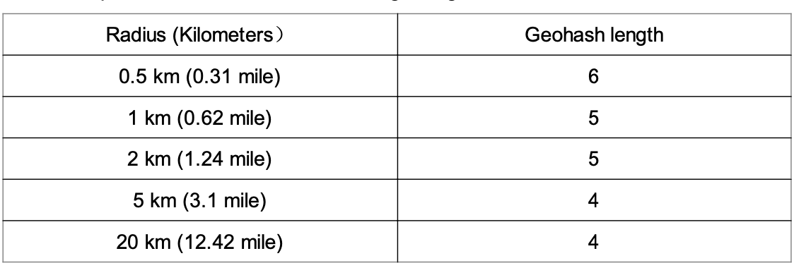
原笔记给出的映射表是：
| 搜索半径 | GeoHash 长度 |
|---|---|
| 0.5 km | 6 |
| 1 km | 5 |
| 2 km | 5 |
| 5 km | 4 |
| 20 km | 4 |
这个表大体合理，但有一项是边界情况，需要修正。 我们用"格子尺寸应当不小于搜索半径（取较小的那个维度，即纬度方向）"这条规则验算一遍：
| 半径 | 长度 6（0.61 km） | 长度 5（4.9 km） | 长度 4（19.6 km） | 长度 3（156 km） | 结论 |
|---|---|---|---|---|---|
| 0.5 km | 够（0.61 ≥ 0.5） | 够但浪费 | — | — | 6 ✓ |
| 1 km | 不够（0.61 < 1） | 够 | 够但浪费 | — | 5 ✓ |
| 2 km | 不够 | 够 | 够但浪费 | — | 5 ✓ |
| 5 km | 不够 | 不够（4.9 < 5） | 够 | 够但浪费 | 4 ✓ |
| 20 km | 不够 | 不够 | 不够（19.6 < 20） | 够 | 应为 3，或改用 5×5 邻域 |
结论：前四项都正确；最后一项「20 km → 长度 4」是边界情况——长度 4 的格子在纬度方向只有约 19.6 km，略小于 20 km 的搜索半径。严格来说应该用长度 3（约 156 km），但那样检索范围会放大近 8 倍，代价太高。
实践中的折中：继续用长度 4，但把邻域从 3×3 扩展到 5×5。5 个格子的纬度跨度 = 5 × 19.6 = 98 km，远超 20 km，完全覆盖得住。详见文末【勘误与补充】。
GeoHash 的"局部性保证"——注意它是单向的
原笔记写的是：「GeoHash 保证两个 geohash 共享的前缀越长，它们就越近。」
这句话是对的，因为共享长度为 k 的前缀意味着两个点落在同一个 k 级格子里，它们的距离必然不超过该格子的对角线长度。
但真正要命的是它的逆命题不成立：
两个位置很近的点，geohash 可能共享极短的前缀，甚至完全没有共享前缀。
这就是 GeoHash 最著名的坑——边界问题。
8. GeoHash 的边界问题
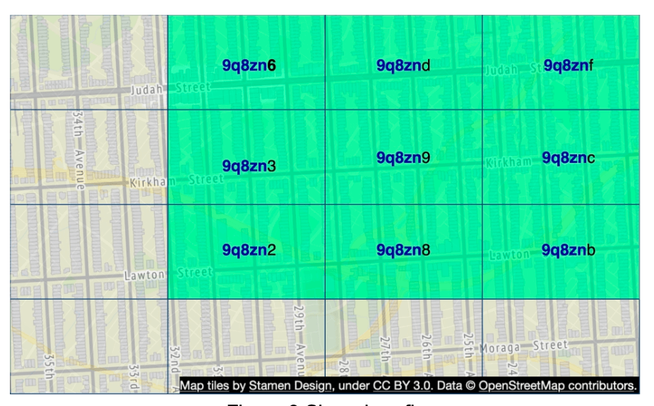
问题一：相邻格子不共享前缀
看上面这张图。中心格子是 9q8zn9，它的八个邻居分别是：
9q8zn6 9q8znd 9q8znf
9q8zn3 9q8zn9 9q8znc
9q8zn2 9q8zn8 9q8znb
关键观察：这九个格子的 geohash 只在最后一个字符上不同，它们共享的前缀只有 5 个字符（9q8zn）。
这意味着什么？ 假设用户站在 9q8zn9 的东边界上，往东 10 米就有一家餐厅——那家餐厅的 geohash 是 9q8znc。如果你只用"前缀匹配 9q8zn9"来查询，这家近在眼前的餐厅会被完全漏掉。
问题二：极近的两个点可能完全没有共享前缀
原笔记提到的这个情况是真实存在的，而且比第一个问题更极端：
赤道上的两个点，纬度分别是 +0.0001° 和 −0.0001°。它们的实际距离只有约 22 米，但 geohash 可能一个字符都不共享。
为什么？ 回顾编码规则：第 1 位是经度，第 2 位是纬度。赤道以北，第 2 位是 0；赤道以南，第 2 位是 1。两个点在第 2 位就分道扬镳，所以它们的第一个字符就已经不同了。
同样的问题还会出现在：
| 边界 | 说明 |
|---|---|
| 赤道（纬度 0°） | 第 2 位翻转，最极端的情况 |
| 本初子午线（经度 0°） | 第 1 位翻转 |
| 180° 经线（反经线） | 东西半球分界，格子需要环绕（Wrap-around） |
| 两极附近 | 经度方向的格子被极度压缩，编码退化 |
解决方案：查询相邻格子
做法：先算出用户所在的格子，再算出它周围的 8 个邻居格子，然后同时查询这 9 个格子，最后合并去重、按距离排序。
查询键列表 = [my_geohash, 邻居1, 邻居2, ..., 邻居8] ← 共 9 个
工程上要注意四个细节：
① 9 个格子是"最小覆盖集"，不是"完整覆盖集"。
如果用户站在格子的角落，半径又刚好大于格子尺寸，那么 3×3 可能仍然不够——需要根据"半径 / 格子尺寸"的比值动态扩大邻域（如 5×5）。通用做法是：取能覆盖 半径 + 格子对角线 的最小邻域。
② 反经线需要环绕处理。
如果一个格子位于经度 180° 附近，它东边的邻居应该"绕回"到 −180°。如果实现时忘了处理，就会出现"在日期变更线附近搜不到东西"的诡异 bug。 Redis 的 geohash 辅助函数内部就实现了这种环绕。
③ 两极需要特殊处理。
纬度接近 ±90° 时，经度方向的格子宽度趋近于 0，同一纬度圈上的格子数量会爆炸。实际业务里一般直接限制服务范围（比如不覆盖极地），而不是硬解这个问题。
④ 9 个格子查完还要去重。
同一家商家只会落在一个格子里，所以 9 次查询的结果天然不重复。但如果你查询的邻域重叠了（比如两次查询的邻域有交集），就可能重复。最后一步的去重不能省。
一句话记住 GeoHash 的边界问题：GeoHash 保证"前缀相同 ⇒ 位置相近"，但不保证"位置相近 ⇒ 前缀相同"。 前者让查询成为可能，后者让查询必须查邻域。这个不对称性，是面试中最容易被追问的点。
9. 方案三：四叉树（Quadtree）
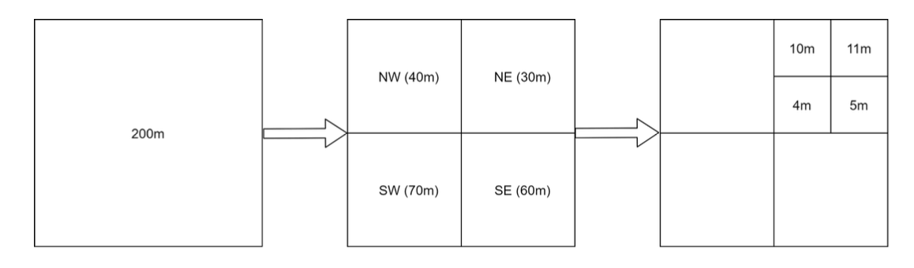
什么是四叉树
四叉树（Quadtree） 是一种树形数据结构，它递归地把二维空间分成四个象限，每个内部节点恰好有四个子节点，分别对应四个子区域。
关键规则：从根节点开始递归四分，直到每个叶子节点包含的商家数量不超过 x 个（本章取 x = 100）。
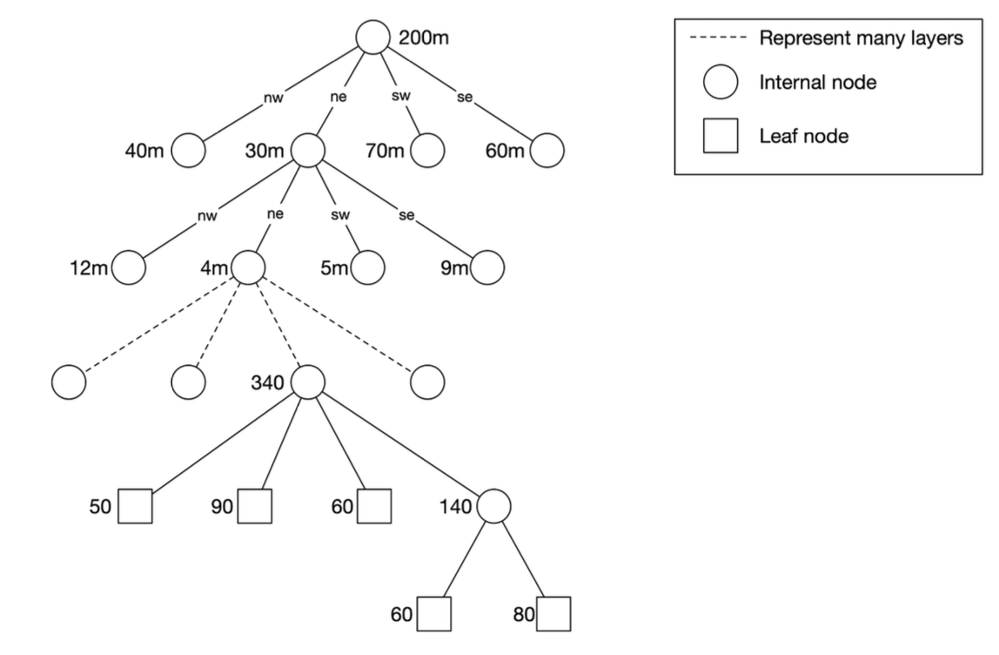

这就是"自适应格子"的威力：市中心商家密集，树会自动细分很多层，格子很小；郊区商家稀疏，树很快就停止细分，格子很大。格子大小自动匹配数据密度，不需要人工调参。
四叉树适合什么查询
四叉树特别适合 k 近邻（k-Nearest Neighbors, kNN）查询，比如"找出离我最近的加油站"。
为什么？ 因为 kNN 查询可以从用户所在的叶子节点开始，逐层向外扩展：先看本叶子，不够就回溯到父节点看兄弟节点，直到凑够 k 个且确定不会有更近的。这个"由近及远"的搜索顺序，正是树结构天然支持的。
对比一下 GeoHash：GeoHash 查询"半径 R 内的所有商家"很自然，但查"最近的 3 家"就有点别扭——你不知道该选多大的半径。四叉树的层次结构让"逐步扩大搜索范围"变得优雅。
内存占用验算
原笔记说：「四叉树索引不会占用太多内存（通常在 GB 级别），很容易放进一台服务器。」
我们验算一下：
2 亿个商家，每个叶子节点最多 100 个商家
叶子节点数 ≈ 2 亿 / 100 = 200 万个
内部节点数 ≈ 200 万 / 3 ≈ 67 万个（每个内部节点有 4 个子节点，所以内部节点数约为叶子的 1/3）
总节点数 ≈ 267 万个
叶子节点存储商家 ID：2 亿 × 8 字节 = 1.6 GB
加上节点边界、指针等开销，总计约 2 GB 量级
所以"GB 级别"这个判断是准确的。 ✓
构建时间
原笔记说：「构建树的时间复杂度是 O(n log n)，可能需要几分钟。」
这个也是对的。 每次插入的代价是树的深度（约 log₄(2亿/100) ≈ 10 层），n 次插入即 O(n log n)。2 亿次插入，实测量级确实在几分钟。
运维上的三个坑
原笔记在这一节写得相当扎实，这里补充说明为什么每个坑都致命：
① 构建期间无法服务流量
树在服务器启动时构建，构建完成前这台服务器不能处理请求。所以新版本必须灰度发布到一小部分服务器，而不是一次性全量重启——否则会出现"所有服务器同时不可用"的窗口。
② 增量重建会导致大量缓存失效
商家信息变更时，最简单的做法是"重建整棵树"。但重建会让所有服务器的树结构都变，而如果树是按 geohash 或其他键分片缓存的，缓存会大面积失效。
③ 在线更新需要加锁，实现复杂
也可以在树构建完成后动态更新，但多线程读写同一棵树必须加锁，这会引入并发正确性问题和性能瓶颈。
这三条合起来说明一件事：四叉树是一个"读极快、写极痛"的结构。 它适合"数据每天批量更新一次"的场景——而这恰好就是本章的需求（商家信息不要求实时）。需求和数据结构的匹配，就是架构设计的本质。
10. 方案四：Google S2
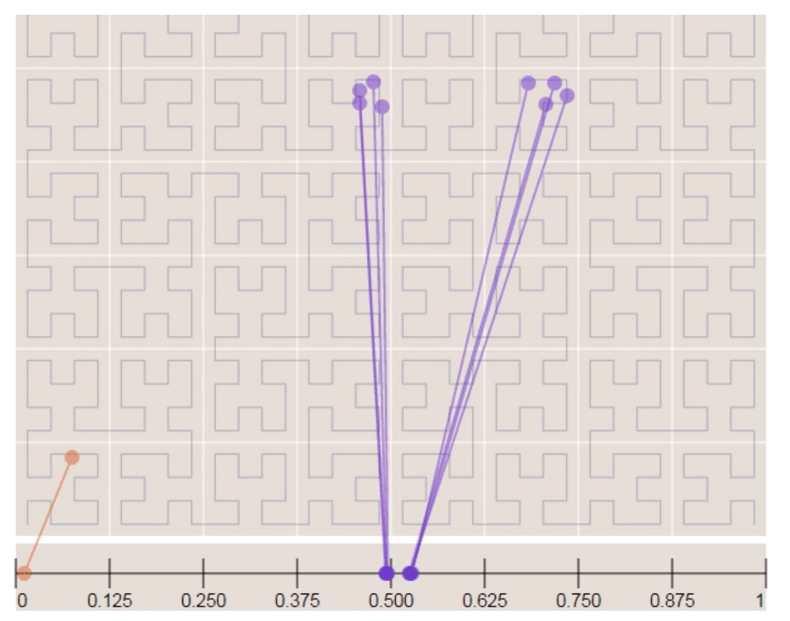
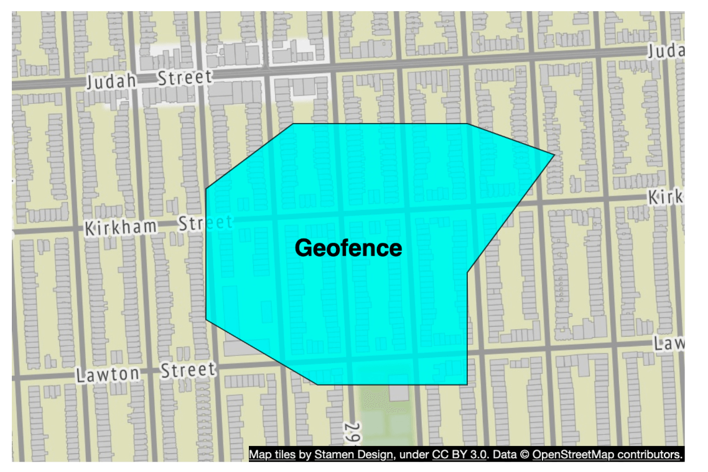
核心思想
S2 把球面映射到一维索引，基于 Hilbert 曲线。原笔记的表述是：「Hilbert 曲线上彼此靠近的两个点，在一维空间中也是靠近的。」
这里值得补充一点：Hilbert 曲线比 GeoHash 用的 Z-order 曲线（Morton 编码）有更好的局部性。
| 曲线 | 局部性 | 说明 |
|---|---|---|
| Z-order（Morton） | 一般 | 存在"跳跃"——相邻的两个格子编号可能相差很大 |
| Hilbert | 更好 | 连续移动时从不相邻跨越，相邻格子的编号总是接近 |
直观理解：Z-order 曲线是"画 Z 字"，从一个象限跳到下一个象限时会跨过一段距离；Hilbert 曲线是"画 U 字再旋转"，它在二维空间里连续爬行，不会出现长距离跳跃。所以在"按编号范围查询"时，Hilbert 曲线能圈出更紧凑的空间区域，扫描的无效数据更少。
S2 的独特优势
原笔记列出的几点都正确：
- 把地球分成小格子，基于 Hilbert 曲线
- 非常适合地理围栏（Geofencing）：它可以用不同层级的格子覆盖任意形状的区域
- 地理围栏还允许定义围绕目标区域的参数
- 可以指定最小层级、最大层级和最大格子数，而不是只能用固定的精度
这第 4 点才是 S2 真正的杀手锏。 用 GeoHash 时，你只能选"长度 6"或"长度 7"这样的单一精度。但一个城市级的区域，用长度 6 覆盖会产生海量格子，用长度 4 又太粗糙、会覆盖到区域外。
S2 允许你混用不同层级的格子来逼近目标形状——大块区域用粗格子，边界处用细格子。这就是"用最少的格子覆盖任意形状"的能力，也是地理围栏的核心需求。
什么是地理围栏？ 它是"当用户进入/离开某个区域时触发动作"的功能，比如"到家时自动打开灯"、"进入商场推送优惠券"。它的难点不是判断一个点是否在区域内，而是如何高效地为几千万个用户同时判断。
11. 工业实现：Redis GEO 与 PostGIS
原笔记只给了算法，没有提工业实现。但面试和实际工作中，你几乎不会自己实现 GeoHash——你会直接用现成的系统。 这里补上两个最主流的。
Redis GEO
它是什么：Redis 内置的地理位置功能，用几个命令就能完成"附近搜索"。
| 命令 | 作用 |
|---|---|
GEOADD key lon lat member |
添加一个位置 |
GEOPOS key member |
查询某个成员的坐标 |
GEODIST key m1 m2 [unit] |
计算两个成员之间的距离 |
GEOSEARCH key FROMMEMBER m BYRADIUS 500 m |
半径搜索（推荐使用） |
GEORADIUS / GEORADIUSBYMEMBER |
旧版半径搜索命令（Redis 6.2 起已废弃） |
底层用的是什么索引？
Redis GEO 的底层不是一棵空间树，而是一个有序集合（Sorted Set，ZSET），score 是 52 位的 GeoHash 整数。
具体来说：
- 每个坐标被编码成一个 52 位整数（经度 26 位 + 纬度 26 位，交错排列），这个整数作为 ZSET 的 score。
- ZSET 内部用跳跃表（Skip List）+ 哈希表实现。跳跃表让"按 score 范围查找"的复杂度为 O(log N)。
- 执行
GEOSEARCH时，Redis 会计算查询区域对应的 GeoHash 覆盖（通常是 3×3 邻域），对每个格子做一次 score 范围扫描，捞出候选，再逐点计算真实距离过滤并排序。
所以 Redis GEO 就是"GeoHash + ZSET 范围查询"的工程化封装，正好对应本章第 7 节讲的算法。
优点：
- 极低延迟（纯内存，通常亚毫秒级）
- 使用简单，不需要额外的数据库
- 天然支持高并发读
缺点：
- 数据必须全部放进内存。本章的 2 亿商家索引约 4 GB，单机内存还能扛；但数据量再大就很贵。
- 持久化能力弱于数据库。Redis 的 RDB/AOF 可以持久化，但它的定位是缓存而不是权威数据源。生产系统通常把 Redis 当"索引缓存"，真正的权威数据在 MySQL/PostgreSQL 里。
- 不支持复杂的空间运算（如多边形相交、缓冲区分析）。
容量验算：2 亿条记录，每条 = geohash 6 字符（约 6 字节）+ business_id（8 字节）+ ZSET 的跳跃表指针和哈希表开销（每条约几十字节）。粗算下来约 4～8 GB，单台大内存机器可以承载。
PostGIS
它是什么：PostgreSQL 的空间扩展，给关系型数据库加上完整的空间数据类型和空间查询能力。
| 能力 | 说明 |
|---|---|
geometry / geography 类型 |
表示点、线、多边形等空间对象 |
ST_DWithin(geom, point, distance) |
距离范围内的查询（会用索引） |
ST_Distance / ST_DistanceSphere |
计算距离 |
ST_Contains / ST_Intersects |
空间关系判断（点在多边形内、两个形状相交） |
ST_Buffer |
缓冲区（生成一个点周围的圆/多边形） |
底层用的是什么索引？
PostGIS 默认使用 GiST（Generalized Search Tree，通用搜索树）索引。对于二维几何数据，GiST 的行为等价于一棵 R 树（R-Tree）——一棵由"最小包围矩形（MBR）"构成的自平衡树。
-- 建表
CREATE TABLE business (
id BIGSERIAL PRIMARY KEY,
name TEXT,
geog GEOGRAPHY(POINT, 4326) -- 4326 是 WGS84 坐标系
);
-- 建空间索引
CREATE INDEX idx_business_geog ON business USING GIST (geog);
-- 查询 500 米内的商家（索引会被自动使用）
SELECT id, name,
ST_Distance(geog, ST_MakePoint(-122.416730, 37.776720)::geography) AS dist_m
FROM business
WHERE ST_DWithin(
geog,
ST_MakePoint(-122.416730, 37.776720)::geography,
500
)
ORDER BY dist_m
LIMIT 50;
GiST / R 树的工作原理：树上的每个节点存一个最小包围矩形，把所有子节点包含在内。查询时，如果一个节点的包围矩形和查询区域完全不相交，整棵子树直接剪掉。这就是它能加速二维范围查询的原因。
PostGIS 的优势：
- 数据和索引都在数据库里，天然有事务、备份、复制能力
- 支持复杂的空间运算（多边形、缓冲区、相交判断）
- 数据量可以远超内存（靠磁盘和 B 树/GiST 的磁盘友好结构）
- 可以用 SQL 和业务数据 JOIN（比如"找出我关注过的、附近的餐厅"）
PostGIS 的劣势：
- 延迟高于 Redis（有磁盘 IO 和查询解析开销）
- 单机写入吞吐有限，需要靠分片扩展
其他工业实现速查
| 系统 | 索引结构 | 说明 |
|---|---|---|
| MySQL | R 树（InnoDB SPATIAL INDEX，MySQL 5.7+） |
提供 ST_Distance_Sphere 等函数 |
| Elasticsearch | BKD 树（Lucene 实现） | geo_point 类型，支持聚合和排序 |
| MongoDB | 2dsphere 索引（球面几何）、2d 索引（平面） |
支持 $near、$geoWithin |
| Uber H3 | 六边形分层索引 | 见下方补充 |
补充：为什么 Uber 要做 H3（六边形网格）？
GeoHash 和四叉树用的是正方形格子。正方形有一个几何缺陷：它有 4 个边邻居（距离 = 边长）和 4 个角邻居（距离 = 边长 × √2 ≈ 1.41 倍）。这意味着"移动一格"的实际距离取决于方向，做"扩大一圈搜索"时会产生方向性偏差。
六边形没有这个问题：它的 6 个邻居到中心的距离完全相等。 这让"逐环扩展搜索"和"按环形聚合统计"变得干净。H3 在 Uber 被大量用于定价分区、供需热力图等场景。
这是"网格形状会影响算法正确性"的一个很好的例子——初学者容易以为格子形状只是审美问题。
12. 索引方案横向对比
原笔记的对比（保留）
GeoHash
- 易于使用和实现——不需要构建/重建树
- 支持固定半径的结果
- 更新索引很简单
- 无法根据人口密度动态调整格子大小
Quadtree
- 实现稍微难一些
- 支持 k 近邻查询
- 可以根据人口密度动态调整格子大小
- 更新索引更复杂，可能需要重建整棵树
补充：三方案完整对比
| 维度 | GeoHash | Quadtree | Google S2 |
|---|---|---|---|
| 索引结构 | 固定网格（哈希） | 自适应树 | Hilbert 曲线上的变层级格子 |
| 实现难度 | 低 | 中 | 高 |
| 是否需构建树 | 否 | 是（启动时构建，数分钟） | 否（库函数） |
| 自适应密度 | 否 | 是 | 是（可指定 min/max level） |
| 半径查询 | 天然支持 | 支持 | 支持 |
| k 近邻查询 | 需估算半径 | 最擅长 | 支持 |
| 地理围栏 | 弱（只能近似） | 一般 | 最强（任意形状） |
| 索引更新 | 简单 | 困难（可能重建整棵树） | 中等 |
| 边界问题 | 有（需查邻域） | 无 | 无（曲线连续） |
| 适用场景 | 固定半径的"附近搜索" | k 近邻、数据密度差异大 | 复杂地理围栏、大规模地图服务 |
| 工业代表 | Redis GEO、MongoDB 2d |
自建 LBS 服务 | Google Maps、Uber H3（同类思路） |
本章的选择：因为是"固定半径的附近搜索"，且商家数据每天批量更新（可以容忍重建索引），原笔记选择了 GeoHash + Redis。这是一个"用最简单能满足需求的方案"的决策，而不是"用最先进的技术"。在面试中说出这个理由，比直接说"用 GeoHash"更有价值。
13. 数据库扩展与缓存策略
商家表的分片
原笔记写的是：「按商家 ID 分片能保证数据均匀分布。」
这个做法可行，但需要说清代价：
- 优点：商家 ID 是自增或随机的，分布均匀，不会出现热点分片。
- 代价：按 ID 分片意味着"按地理位置查询"必须查所有分片。所以商家表的分片只适用于"按 ID 查详情"这个场景，地理位置搜索必须靠独立的索引表（Redis GEO）来承担。
| geohash | business_id |
|---|---|
9q9hvu |
343 |
9q9hvu |
347 |
9q9hvu |
112 |
空间索引表的扩展
原笔记的判断很精准：「可能不太适合分片。在这种情况下所有数据都能放进一台服务器，所以没有分片的技术理由。更好的做法是用只读副本（Read Replica）来分担读负载。」
验算一下"能放进一台服务器"这个判断：
2 亿条索引记录 × (geohash 约 6 字节 + business_id 8 字节 + 索引开销约 20 字节)
≈ 2 亿 × 34 字节 ≈ 6.8 GB
约 7 GB，单台大内存服务器完全可以承载。 ✓ 原笔记的判断成立。
缓存策略
原笔记这一段写得很好，指出了"用坐标做缓存键"的三个问题：
- GPS 坐标不精确——同一位置，两次定位结果可能相差几米到几十米，导致缓存永远不命中。
- 用户会移动——坐标一变，缓存键就变。
- 更好的缓存键是 geohash。
| 缓存键 | 缓存值 |
|---|---|
geohash |
该格子内的商家 ID 列表 |
business_id |
商家详情（名称、地址、评价等） |
为什么 geohash 做缓存键能解决前两个问题？ 因为量化（Quantization）——无论 GPS 报出的坐标是
37.7767201还是37.7767298，只要它们落在同一个 geohash 格子里，缓存键就是同一个。"把连续值离散化，从而让缓存命中"，是一个通用且非常重要的缓存设计技巧（和第 1 章讲的"过期时间加随机抖动"是同一类思想）。顺带一提：把坐标量化成 geohash 再发给服务端，同时也是一个隐私保护手段——服务端永远拿不到用户的精确位置，只知道"他在这个约 1.2 km × 0.6 km 的格子里"。一个设计同时解决了性能和隐私两个问题，这是很好的架构。
缓存的两个层次：
- geohash → 商家 ID 列表：命中率最高，因为同一格子会被大量用户重复查询。但要设置较短的过期时间，否则商家信息更新后会长时间不一致。
- business_id → 商家详情：可以设较长的过期时间（因为商家信息本来就不实时）。
14. 部署策略与最终架构
区域与可用区
- 把 LBS 和商家服务部署到多个区域（Region）。
- 每个区域内部跨多个可用区（Availability Zone） 部署，保证单机房故障不影响服务。
对位置服务来说，多区域部署还有一个额外的必要性：延迟。 用户的搜索请求如果跨洲传输，光速带来的延迟就有 100 毫秒以上。把 LBS 部署到用户附近，是满足"低延迟"这个非功能需求的必要手段。
实时更新怎么处理
原笔记写的是：「商家更新每天批量处理一次。」
这是一个非常重要的架构决策，值得展开说明它的好处：
- 空间索引不需要支持在线写入——这就完全绕开了"四叉树在线更新要加锁"、"GeoHash 索引更新会引入不一致"这些难题。
- 可以用离线批处理构建索引——把索引当成"每天重新生成的产物"，而不是"需要实时维护的状态"。
- 可以容忍副本延迟——因为数据本来就有一天的新鲜度容忍度。
这就是为什么第 1 节里"商家维护不要求实时生效"这条需求如此关键。 一条看似无关紧要的需求描述，直接决定了整个索引架构可以有多简单。读需求时，一定要特别留意"实时性"和"一致性"这两类约束。
最终架构与检索流程
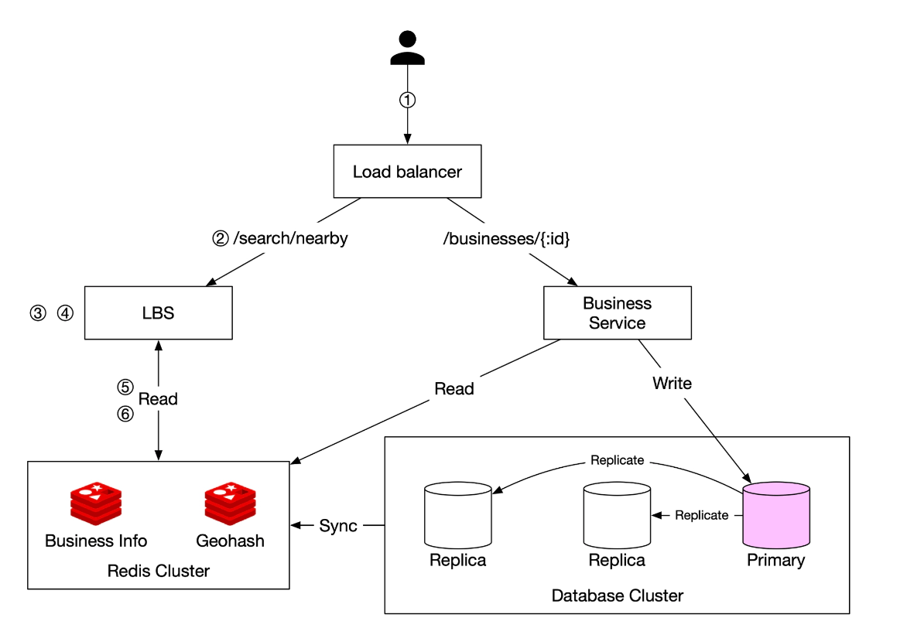
完整的附近商家检索流程：
① 用户请求 用户在半径 500 米内搜索餐厅。客户端把纬度（37.776720）、经度（−122.416730）、半径（500m） 发给负载均衡器。
② 请求转发 负载均衡器把请求转发给位置服务（LBS）。
③ 计算 GeoHash 长度 LBS 根据半径确定合适的 geohash 长度。查参考表：500 米 对应 geohash 长度 = 6。
验算：长度 6 的格子约 1.22 km × 0.61 km，纬度方向 0.61 km ≥ 0.5 km 半径，够用。✓
④ 计算相邻格子 LBS 计算周围的相邻格子，得到 9 个格子的列表：
[my_geohash, neighbor1_geohash, ..., neighbor8_geohash]
⑤ 从 Redis 拉取商家 ID 对列表中的每个 geohash，LBS 查询 GeoHash Redis 服务器，取回商家 ID 列表。这些查询并行执行以最小化延迟。
⑥ 取详情并排序 LBS 从商家信息 Redis 服务器取回完整的商家详情，按与用户的距离排序，把排好序的结果返回给客户端。
注意第 ⑥ 步的"按距离排序"是必需的：因为 geohash 格子是正方形，落在格子里的商家可能位于格子的任何位置。按 geohash 查出来的顺序和真实距离无关，必须重新计算距离并排序。
而且这里还应该做精筛：把包围盒四个角上、实际超出 500 米的商家过滤掉。原笔记的流程里没有明确提到这一步。
关键优化
原笔记总结的三条都正确：
- 并行 Redis 调用：降低响应时间
- GeoHash 索引：保证空间查询高效
- 缓存：加速查找和详情获取
补充第四条：限制返回条数并做分页。 市中心的 500 米内可能有几千家餐厅，全部返回既慢又没用。应该只返回最近的 N 条（如 50 条），或做分页。 这也是
LIMIT在空间查询里几乎是必需的原因。
15. 位置数据的隐私合规
原笔记在非功能需求里提到了"遵守 GDPR 和 CCPA"，但正文完全没有展开。而位置数据是监管最严格的数据类型之一，这一节不能省。
为什么位置数据特别敏感
位置数据本身可能不敏感，但它能推断出极敏感的信息：
- 频繁出现在某宗教场所 → 宗教信仰
- 频繁出现在某医院/诊所 → 健康状况
- 夜间出现在某些特定场所 → 性取向
- 住所 + 工作时间 → 可精确定位到个人
所以"位置数据"在很多法域里不是普通个人信息，而是需要额外保护的类型。
主要法规要求
| 法规 | 对位置数据的要求 |
|---|---|
| GDPR（欧盟） | 位置数据属于个人数据。处理需要合法性基础；必须遵循数据最小化、目的限制、存储期限限制原则；大规模位置处理通常需要做数据保护影响评估（DPIA） |
| CCPA / CPRA（美国加州） | 「精确地理位置（Precise Geolocation）」被明确列为敏感个人信息，消费者有权知情、删除、限制使用 |
| PIPL（中国《个人信息保护法》） | 「行踪轨迹」被明确列为敏感个人信息，处理需取得单独同意，且必须具有特定的目的和充分的必要性 |
注意中国法规的一个特殊之处：PIPL 对敏感个人信息要求单独同意（Separate Consent）——不能用一揽子隐私政策打包获取，必须为位置数据单独弹窗取得同意。此外，在中国提供地图和位置服务还涉及测绘资质与地图数据合规的要求，这是另一个独立的合规维度。
工程上的六条对策
① 数据最小化：不存原始 GPS 轨迹
最常见也最严重的错误是：把用户的每一次定位都落库，形成一条精确的轨迹。 这条轨迹的价值密度极高，一旦泄露后果严重，而绝大多数业务根本用不到它。
正确做法：只在内存里处理当次请求的坐标，用完即弃；确实需要保留时，只保留降精度后的数据（如 geohash 长度 5 或 6）。
② 坐标量化 / 网格吸附（Grid Snapping）
在客户端就把坐标吸附到 geohash 格子的中心，再发给服务端。 服务端永远拿不到精确位置，只知道"用户在这个约 1.2 km × 0.6 km 的格子里"。
这个做法同时解决了性能和隐私问题（前面第 13 节已经讲过缓存键的量化效应）。精度可以按业务需要调整：找餐厅用长度 6 就够了；如果是打车，可能需要长度 7 或更高。
③ 优先在客户端计算
把 geohash 索引缓存在客户端，"附近搜索"直接在本地完成，根本不上传坐标。代价是数据新鲜度（缓存需要定期更新），适合对实时性要求不高的场景。
④ 短期保留 + 自动删除
如果业务确实需要保留位置历史（如行程记录），必须设置明确的保留期限并自动删除（如 30 天）。"永久保留"在 GDPR 和 PIPL 下都是高风险的。
⑤ 匿名化 vs 假名化——这两者不一样
这是最容易被误解的一点：
- 假名化（Pseudonymization）：用用户 ID 替换真实身份。假名化后的数据仍然是个人数据，因为可以通过 ID 重新关联回个人。
- 匿名化（Anonymization）：数据不可逆地无法关联到任何个人。只有真正匿名的数据才不受 GDPR 约束。
关键陷阱：把位置数据里的用户 ID 去掉，并不等于匿名化。因为位置本身就是一个强标识符——研究表明，只要知道一个人 4 个时间点的位置，就足以在 150 万人中唯一识别出他。所以"删掉姓名就叫匿名"是错的。
⑥ 访问控制与审计日志
"谁能查询某个用户的位置"必须被严格限制并留痕。 内部人员滥用位置查询权限是实际发生过的严重事故类型。做法：最小权限、双人审批、全量审计日志。
在面试中主动提到"把坐标吸附到 geohash 格子中心，服务端不接触精确位置"，是一个很强的加分项。 它同时体现了技术能力和合规意识，而且方案本身很简单——好的设计往往就是这样。
勘误与补充
本节逐条指出原笔记中不准确、过时或缺失的地方。
勘误 1：二维范围查询的 SQL 单位错误——用「度」减「米」
- 原文说法：
WHERE (latitude BETWEEN :lat - radius AND :lat + radius) AND (longitude BETWEEN :long - radius AND :long + radius); - 问题：单位不匹配。
radius的单位是米（API 定义里默认 5000m），而latitude/longitude的单位是度。:lat - radius相当于"用纬度减去 5000"，得出的范围会覆盖从南极到北极的整个地球，查询完全失效。这是一个硬性的技术错误，不是表述问题。 - 正确说法：必须先把距离换算成度数：
注意经度那一项必须乘-- 1 度纬度 ≈ 111,320 米 -- 1 度经度 ≈ 111,320 × cos(纬度) 米（随纬度收缩） WHERE latitude BETWEEN :lat - (:radius / 111320.0) AND :lat + (:radius / 111320.0) AND longitude BETWEEN :long - (:radius / (111320.0 * COS(RADIANS(:lat)))) AND :long + (:radius / (111320.0 * COS(RADIANS(:lat))));cos(纬度)——因为在北纬 60° 处，1 度经度的实际长度只有赤道的一半。如果漏掉这个因子，高纬度地区会漏掉一半的结果。 - 延伸：同时要意识到包围盒 ≠ 圆。上面的查询会返回矩形四角上的商家，它们的实际距离超过半径。必须做第二阶段精筛：用 Haversine 公式计算真实球面距离，过滤掉圆外的点，再按距离排序。
勘误 2：搜索 QPS 的算术有偏差
- 原文说法：
Search QPS = (100M × 5) / 86,400 ≈ 5,000 QPS。 - 问题：按原笔记自己给的数字计算，
5 亿 / 86,400 = 5,787，约 5,800 QPS，不是 5,000。虽然只差 16%，但在粗略估算中，保留两位有效数字比取整到整数更有价值（因为你后面要乘峰值系数，误差会被放大）。 - 正确说法：约 5,800 QPS（平均）。更重要的是，必须再乘峰值系数——位置服务的流量有极强的时段性和地域性（周五晚 7 点的市中心可能是凌晨的几十倍）。按 2～3 倍估算，峰值约 1.2 万 ～ 1.7 万 QPS。
- 延伸：粗略估算里"平均值"和"峰值"的区别，比算得准不准重要得多。 用平均 QPS 做容量规划，系统一定会在高峰时段挂掉。
勘误 3：GeoHash 半径映射表中「20 km → 长度 4」是边界情况
- 原文说法：参考表给出
20 km → geohash length = 4。 - 问题：长度 4 的 geohash 格子在纬度方向只有约 19.6 km，而搜索半径是 20 km，格子尺寸小于搜索半径。按"格子尺寸应当不小于搜索半径"这条规则，长度 4 严格来说不够用（详见第 7 节的验算表）。
- 正确说法：有两种处理方式：
- 改用长度 3（约 156 km × 156 km）——安全，但检索范围放大近 8 倍，代价高；
- 保持长度 4，但把邻域从 3×3 扩展到 5×5——5 个格子的纬度跨度约 98 km，远超 20 km。这是实践中更合理的折中。
- 延伸：表格中的前四项（0.5 km → 6、1 km → 5、2 km → 5、5 km → 4）都正确。这个勘误只针对最后一项。而且它揭示了一个更普遍的道理：这类"半径 → 精度"的对照表都是近似值，实现时必须用公式验证，并动态选择邻域大小。
勘误 4：「GeoHash 保证共享前缀越长越近」这句话需要补上它的逆命题不成立
-
原文说法：
Geohash guarantees that the longer a shared prefix is between two geohashes, the closer they are.（GeoHash 保证两个 geohash 共享的前缀越长，它们就越近。） -
问题：这句话本身是正确的（共享长度为 k 的前缀意味着两个点落在同一个 k 级格子里，距离不超过该格子的对角线）。原笔记在 Challenges 一节也正确指出了边界问题。但把这句话单独放在正文里，极容易让读者误以为"距离近 ⇒ 前缀长"也成立。 而这个逆命题恰恰是错的——这就是 GeoHash 最著名的坑。
-
正确说法：应当明确表述为单向保证：
「前缀相同 ⇒ 位置相近」成立；「位置相近 ⇒ 前缀相同」不成立。
后半句的两个反例：① 相邻格子（如
9q8zn9和9q8znc）只共享 5 个字符的前缀；② 赤道两侧相距约 22 米的两个点，可能连一个字符都不共享（因为第 2 位是纬度位，会在赤道处翻转）。 -
延伸：必须查询相邻的 8 个格子，并处理反经线环绕和两极退化。另外要注意邻域大小不是固定的 3×3——当搜索半径大于格子尺寸时需要动态扩大邻域（取能覆盖"半径 + 格子对角线"的最小邻域）。
勘误 5：Quadtree 小节内容准确，无技术错误
- 原文说法：四叉树"每个内部节点恰好有四个子节点"；"递归细分直到每个节点不超过 x 个商家（这里取 100）"；"内存占用通常在 GB 级别"；"构建时间复杂度 O(n log n)，可能需要几分钟"。
- 核查结果：这一节内容准确，我们逐条验算过：
- 2 亿商家 / 每叶 100 个 ≈ 200 万叶子 + 约 67 万内部节点 ≈ 267 万节点；仅商家 ID 就需
2 亿 × 8 字节 = 1.6 GB，加节点开销约 2 GB 量级——"GB 级别"成立 ✓ - 每次插入代价为树深（约
log₄(2亿/100) ≈ 10层），n 次插入即 O(n log n) ✓ - "构建期间不能服务流量 → 需要灰度发布"、"增量重建导致缓存失效"、"在线更新需要加锁"这三条运维注意事项，都是真实存在的问题，写得相当扎实 ✓
- 2 亿商家 / 每叶 100 个 ≈ 200 万叶子 + 约 67 万内部节点 ≈ 267 万节点；仅商家 ID 就需
- 补充：四叉树的核心优势是自适应密度，核心劣势是写代价高。它最适合"数据每天批量更新一次"的场景——这恰好匹配本章"商家信息不要求实时"的需求。
补充 1：GeoHash 精度的完整验算表
原笔记给出了半径映射表，但没有给出"不同长度对应多大范围"的完整表格和推导公式。详见第 7 节。核心结论：6 位 geohash ≈ 1.22 km × 0.61 km（赤道），这个数字在常见资料中是对的。 但要注意两点：
- 经度方向的宽度随纬度收缩（北纬 37.77° 处只有约 0.97 km）；
- 12 个精度层级从 5000 km 一直细分到 3.7 cm，跨越了 5 个数量级。
补充 2：GeoHash 的边界问题及解决方案
原笔记提到了边界问题并给出"需要搜索相邻格子"，但没有说清问题的严重程度、也没有给出完整的解决方案。详见第 8 节。这是本章最容易被面试追问的点。
补充 3：Redis GEO 与 PostGIS 的工业实现
原笔记只讲了算法，没有提工业实现。详见第 11 节。核心结论：
- Redis GEO 的底层是一个 ZSET（有序集合），score 是 52 位 GeoHash 整数，内部用跳跃表 + 哈希表。
GEOSEARCH做的是"GeoHash 邻域 + score 范围扫描 + 精确距离过滤"。 - PostGIS 默认用 GiST 索引，对二维几何数据的行为等价于 R 树（最小包围矩形树）。
补充 4：Uber H3 与「六边形网格」的价值
原笔记没提。详见第 11 节末。核心洞察：正方形网格有 4 个边邻居（距离 = 1 格）和 4 个角邻居（距离 = 1.41 格），做环形扩展搜索时会产生方向偏差；六边形的 6 个邻居距离完全相等，因此更适合"逐环扩展"和"环形聚合"。
补充 5：位置数据的隐私合规与工程对策
原笔记在非功能需求里提了 GDPR 和 CCPA，正文完全没有展开。详见第 15 节。最重要的三条：
- 「假名化 ≠ 匿名化」——删掉用户 ID 不等于匿名，因为位置本身就是强标识符；
- 在客户端把坐标吸附到 geohash 格子中心，服务端不接触精确位置——一个设计同时解决性能和隐私；
- 中国 PIPL 把「行踪轨迹」列为敏感个人信息，需要「单独同意」，不能打包在通用隐私政策里。
补充 6：最终检索流程缺少「精筛」和「限制条数」
原笔记的检索流程在第 ⑥ 步做了"按距离排序"，但没有明确说明要过滤掉包围盒四角上的误报，也没有提到限制返回条数。详见第 14 节。在市中心，500 米内可能有几千家餐厅，全部返回既慢又无用。
补充 7：缓存键用 geohash 的深层原因
原笔记给出了结论（"更好的键是 geohash"）和理由（GPS 不精确、用户会移动），但没说透。详见第 13 节。本质是「量化（Quantization）」——把连续值离散化，让缓存键稳定，从而让缓存能命中。
常见误区
| 误区 | 为什么错 | 正确理解 |
|---|---|---|
| 给经纬度各建一个索引，二维查询就快了 | B+ 树是严格一维的；两个一维索引的交集仍需各扫一遍 | 必须先把二维映射成一维键（GeoHash），或改用 R 树 / 四叉树等空间索引 |
用 latitude ± radius 就能做范围查询 |
radius 是米，latitude 是度，单位不匹配 |
必须换算：纬度用 radius / 111320，经度用 radius / (111320 × cos(纬度)) |
| 包围盒查询的结果就是最终结果 | 矩形四角上的商家实际距离超过半径，属误报 | 两阶段：包围盒粗筛 → Haversine 精筛 → 按距离排序 |
| GeoHash 前缀相同就意味着距离近，反之亦然 | 只有单向成立：「前缀相同 ⇒ 距离近」对；「距离近 ⇒ 前缀相同」错 | 必须查询相邻 8 个格子，并处理反经线环绕与两极退化 |
| GeoHash 的格子大小是固定的 | 经度方向的实际宽度随纬度收缩（1° 经度 = 111.32 × cos(纬度) km） | 容量估算要按服务区域的最高纬度算，否则高纬度地区会低估格子数 |
| 查询固定用 3×3 邻域就够了 | 当搜索半径大于格子尺寸时，3×3 覆盖不足 | 取能覆盖「半径 + 格子对角线」的最小邻域，半径大时要扩到 5×5 |
| 用坐标当缓存键最自然 | GPS 有抖动（同一位置两次定位不同），用户还会移动，缓存永远不命中 | 用 geohash 当缓存键——把坐标量化，让缓存键稳定 |
| 四叉树什么场景都比 GeoHash 好 | 四叉树写代价极高：在线更新要加锁，重建会让缓存大面积失效 | 数据频繁更新的场景用 GeoHash；每天批量更新的场景才适合四叉树 |
| 把位置数据里的用户 ID 删掉就匿名了 | 位置本身就是强标识符——几个时间点的位置就足以唯一识别一个人 | 那是假名化，仍是个人数据；真正的匿名化要求不可逆 |
| 在中国做位置服务，只要遵守 GDPR 就够了 | PIPL 对**「行踪轨迹」**有额外要求，且地图服务还有测绘资质合规 | 需要单独同意，且地图/位置服务有独立的合规维度 |
| 位置服务可以只部署在一个区域 | 跨洲请求的光速延迟就超过 100 ms，无法满足低延迟要求 | 多区域部署，LBS 就近服务用户 |
面试速记
-
一句话概括：附近服务要解决的核心是二维空间范围查询——B+ 树索引解决不了它，所以必须把二维位置压成一维键（GeoHash）或改用空间索引结构（四叉树 / R 树 / S2）。
-
必答要点：
- 一维索引无法做二维范围查询。朴素方案要么全表扫描，要么两个一维索引求交，都不行。
- GeoHash 把二维压成一维：经度位与纬度位交错（Morton 编码），每 5 位一组做 base32 编码，共 12 个精度层级。6 位 ≈ 1.22 km × 0.61 km（赤道）。
- 必须查询相邻格子：GeoHash 只保证「前缀相同 ⇒ 距离近」，不保证反向。赤道两侧相距 22 米的点可能零共享前缀。要查 3×3（必要时 5×5）邻域，并处理反经线环绕。
- 两阶段查询：包围盒粗筛 → Haversine 精筛 → 按距离排序，并限制返回条数。
- 缓存键用 geohash 而不是坐标，因为坐标有 GPS 抖动且会随用户移动而变。
-
加分项：
- 主动说出工业实现：Redis GEO 底层是 ZSET + 52 位 GeoHash 整数（跳跃表）；PostGIS 默认用 GiST 索引，行为等价于 R 树。
- 主动指出**「商家更新不要求实时」这条需求的价值**——它让索引可以每天离线批量重建，从而完全绕开"空间索引如何在线更新"这个难题。
- 主动提到把坐标吸附到 geohash 格子中心，一个设计同时解决缓存命中率和隐私合规两个问题。
- 主动区分假名化与匿名化，并指出位置本身就是强标识符。
-
高频追问：
- "为什么不用两个普通索引？"
→ B+ 树是严格一维的。纬度索引能定位纬度范围，但这些记录在经度上完全乱序；两个索引的交集只能靠分别扫描再求交，数据量大时退化成近似全表扫描。复合索引
(lat, lon)也没用，因为第一个字段是范围查询时第二个字段用不上。必须改用空间索引结构。 - "GeoHash 有什么坑？" → 边界问题。核心是单向保证：「前缀相同 ⇒ 距离近」成立，但「距离近 ⇒ 前缀相同」不成立。相邻格子只共享父级前缀（如 9 个格子只共享 5 个字符）；赤道两侧相距 22 米的点因为纬度位翻转可能零共享前缀。解法是查询 3×3（半径大时 5×5）邻域，并处理反经线环绕与两极退化。
- "GeoHash 和四叉树怎么选？" → 看两件事：查询类型和更新频率。固定半径搜索选 GeoHash（实现简单、无需建树、更新容易）；k 近邻查询或数据密度差异极大时选四叉树（自适应密度、天然支持 kNN）。但四叉树写代价极高（在线更新要加锁、重建会让缓存大面积失效），所以只适合数据批量更新的场景。本章的商家数据每天批量更新，两者都可行；GeoHash 实现更简单，所以选它。
- "位置数据怎么合规？" → 三条核心措施：① 在客户端把坐标吸附到 geohash 格子中心再上传，服务端不接触精确位置；② 不落库原始 GPS 轨迹，确需保留则降精度 + 设保留期限；③ 严格限制内部人员的位置查询权限并全量审计。同时要清楚假名化不等于匿名化——位置本身就是强标识符。中国 PIPL 还把「行踪轨迹」列为敏感个人信息，需要单独同意。
- "峰值流量怎么扛？" → 平均 QPS 约 5,800，按 2～3 倍峰值系数规划到约 1.2 万～1.7 万 QPS。LBS 是无状态的，可以直接水平扩展；空间索引数据量约 7 GB，可以整体放进 Redis 集群并靠只读副本分担读负载；缓存以 geohash 为键，命中率天然很高。
- "为什么不用两个普通索引？"
→ B+ 树是严格一维的。纬度索引能定位纬度范围，但这些记录在经度上完全乱序；两个索引的交集只能靠分别扫描再求交，数据量大时退化成近似全表扫描。复合索引
延伸阅读
- ByteByteGo 系统设计面试课程 — 原笔记的来源
- GeoHash 在线工具与算法说明 — 可视化验证本章的精度表格
- Redis 官方文档：Geospatial commands —
GEOSEARCH等命令的权威说明 - PostGIS 官方文档 —
ST_DWithin与 GiST 索引的使用 - Google S2 Geometry — S2 的官方文档与设计说明
- Uber H3 — 六边形分层空间索引，与 GeoHash 的对比很有启发
- Quadtree（维基百科） — 四叉树的基本定义与变体
- Hilbert 曲线与空间填充曲线 — 理解 S2 局部性优势的数学基础
- Elasticsearch：Geospatial queries — BKD 树的工业应用